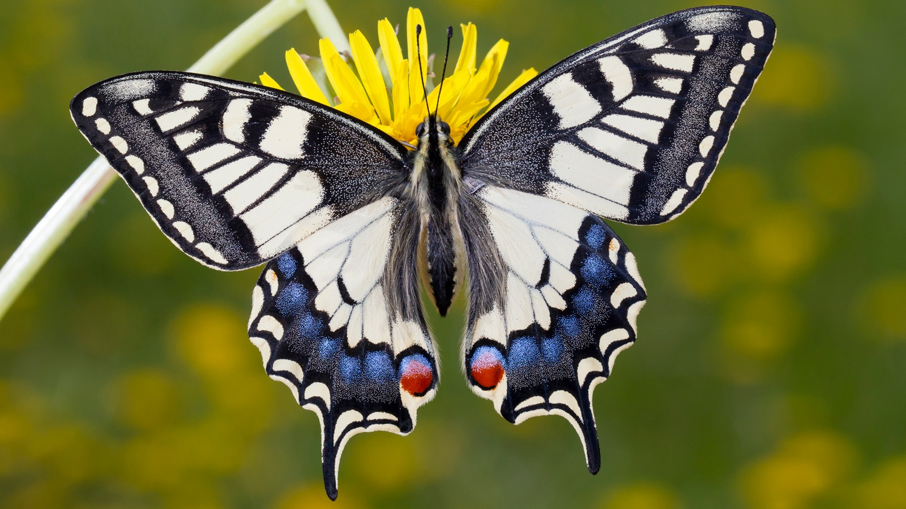

🦋Schmetterlinge🦋
Auf dieser Website erfährst du spannende Informationen zu den Schmetterlingen.
Schmetterlinge, auch Falter genannt, gehören zur Ordnung der Lepidoptera, was „Schuppenflügel“ bedeutet, da ihre Flügel mit winzigen Schuppen bedeckt sind, die für die leuchtenden Farben und Muster verantwortlich sind . Weltweit gibt es über 20.000 bis 200.000 Arten, in Mitteleuropa etwa 4.000, in Deutschland rund 3.700 . Sie kommen auf allen Kontinenten außer der Antarktis vor.
🦋Fortpflanzung🦋
Fortpflanzung schmetterling ganzer text Die Fortpflanzung von Schmetterlingen ist ein komplexer Prozess, der von verschiedenen Aspekten wie der Partnersuche, der Eiablage, der Entwicklung der Raupe in eine Puppe und schließlich in einen Schmetterling umfasst. Schmetterlinge legen Eier, die von den Weibchen auf Pflanzen abgelegt werden, von denen sich die Raupe später ernähren kann. Die Partnersuche erfolgt durch die Wahrnehmung von Pheromone durch den Geruchssinn der Männchen, die mit ihren gefiederten Fühlen wahrnehmen. Die Fortpflanzung ist ein beeindruckendes Beispiel für die Komplexität und Schönheit der Natur.
🌸 Lebensraum 🌸

Schmetterlinge sind auf der ganzen Erde verbreitet und leben in verschiedenen Lebensräumen. Sie sind in der Lage, in vielen Lebensräumen zu leben, von Gebirgen und Graslandschaften bis hin zu Vorstadtgärten und Stadtparks. Die Wahl des Lebensraums hängt von der Nahrung der Raupen ab, die nur auf bestimmten Pflanzen abgelegt werden können. Schmetterlinge sind in der Lage, in vielen Lebensräumen zu leben, von Gebirgen und Graslandschaften bis hin zu Vorstadtgärten und Stadtparks. Die Wahl des Lebensraums hängt von der Nahrung der Raupen ab, die nur auf bestimmten Pflanzen abgelegt werden können.
✨Verwandlungsprozess✨
Die Verwandlung des Schmetterlings ist ein faszinierender Prozess, der oft in Märchen und Texten thematisiert wird. In der Geschichte von Hans Christian Andersen wird der Schmetterling auf die Suche nach einer idealen Braut gebracht, was die Verwandlung in eine symbolische Figur für die Suche nach Identität und Liebe darstellt. Der Schmetterling zeigt, wie man sich von einer Raupe in einen Schmetterling verwandelt, was die symbolische Bedeutung der Verwandlung in die Realität widerspiegelt. e-Hausaufgaben.de Die vollständige Verwandlung des Schmetterlings ist ein lehrreicher Prozess, der oft in Märchen und Texten thematisiert wird, um die Bedeutung der Veränderung und des Wandels in das Leben zu verdeutlichen.

Nahrung
Schmetterlinge ernähren sich hauptsächlich von Nektar, Pflanzensäften und Honigtau, wobei die Art der Nahrung je nach Schmetterlingsart variiert. Hauptnahrungsquellen Die meisten Schmetterlinge, wie der Zitronenfalter, nehmen Nektar aus Blüten auf, den sie mit ihrem langen Saugrüssel aufsaugen können. Nektar liefert den notwendigen Zucker, der als Energiequelle für Flug und Fortpflanzung dient Plantura Magazin Plantura Magazin . Auch Nachtfalter ernähren sich überwiegend von Nektar. Einige Arten bevorzugen jedoch andere Flüssigkeiten, wie Pflanzensäfte, Fallobst oder Honigtau von Blattläusen Plantura Magazin Plantura Magazin . In tropischen Regionen gibt es sogar Arten, die Tränen, Schweiß oder Blut aufnehmen, was in Deutschland jedoch unüblich ist Plantura Magazin Plantura Magazin .
📸Bilder📸
